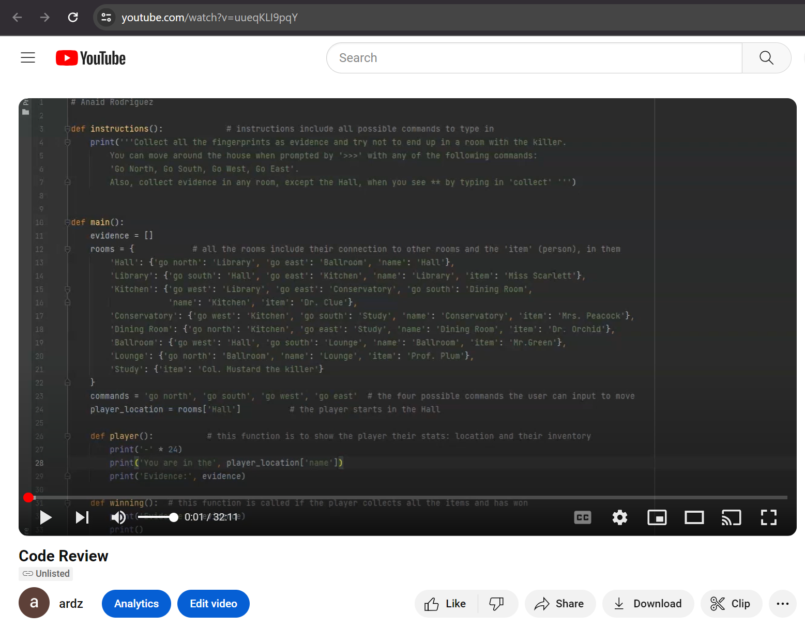

About
Welcome! This ePortfolio was created to showcase the skills I've gained through my years at Southern New Hampshire University (SNHU) while pursuing my bachelor's degree in Computer Science. The ePortfolio will demonstrate my ability to communicate in a professional capacity and will include written narratives of my journey to enhance three artifacts. The narrative will also detail how I reached all the course outcomes and the completed enhancements will demonstrate my skills in three different catagories: Software Design and Engineering, Algorithms and Data Structures, and Databases.
Table of Contents
- Professional Self-Assesment
- Code Review Video
- Artifact 1: Text Based Game
- Enhancement 1: Software Design and Engineering
- Artifact 2: Binary Search Tree
- Enhancement 2: Algorithms and Data Structures
- Artifact 3: Employee Database
- Enhancement 3: Databases
1. Professional Self-Assesment

I have been in the Computer Science program at SNHU since February of 2022. In these past two years, I’ve learned how to program in three different languages; Python, Java, and C++. Additionally, I was introduced to the basics of SQL and JavaScript. I’ve also developed code in various environments such as PyCharm, Eclipse, Visual Studio, Visual Studio Code, Jupyter, and a Linux terminal. Additionally, I learned the importance of and application of the software development lifecycle. This includes understanding client requirements, developing bug-free code that follows best practices, and continuously testing code for vulnerabilities and functionality issues.
My career plans are to enter cybersecurity, machine learning, or data analytics. Each artifact I chose to enhance for the ePortfolio aligns with my career aspirations and showcases my abilities for the respective career path. Working with Python in my first enhancement helps prepare me for a potential role in machine learning as it is a commonly used programming language in that field. Additionally, my understanding of algorithms that is demonstrated with my second enhancement is an important skill to have when working with machine learning programs. As for cybersecurity, following coding best practices is the first step in the lines of defense. By delivering well written code that has been thoroughly tested for functionality issues and has all necessary input validation, I will help prepare myself for a potential career in cybersecurity. Lastly, understanding how to work with databases aligns with the type of work I would be doing in a data analytics job. Demonstrating my skills of Python, algorithms, and databases shows my ability to perform the duties of my possible career specializations.
2. Code Review Video
In my code review video, I discuss the original three artifacts, their purpose and functionalities as well as a walkthrough of the code, and my enhancement plan for all three. The code review video can be found here.
3. Artifact 1: Text Based Game
Text Based GameThe first artifact I chose was the final project for the course IT-140: Introduction to Scripting. The artifact is a text-based game written in Python and was originally developed in April of 2022. I felt very inclined to and excited about choosing this particular artifact because I had a lot of fun creating the first time around but knew very well that the code written was not up to professional coding standards. I selected this artifact because I knew it was the assignment I could improve on the most and fully reflect how much I’ve learned these past 2 years. The course outcomes I planned to accomplish were:
-
Demonstrate an ability to use well-founded and innovative techniques, skills, and tools in computing practices for the purpose of implementing computer solutions that deliver value and accomplish industry-specific goals.
-
Design, develop, and deliver professional-quality oral, written, and visual communications that are coherent, technically sound, and appropriately adapted to specific audiences and contexts.
4. Enhancement 1: Software Design and Engineering
Text Based Game EnhancedIn my first enhancement, I demonstrated my ability to create code that follows best practices through readability, reusability, and in-line commenting. My main focus when enhancing this artifact was creating reusable code because the original program contained most of the code inside the main function. In my first term here at SNHU I learned what functions were and their importance in creating reusable and clean code but I had not fully understood how to use them. Through various courses, I began relying on the creation of classes and functions to create reusable code and I wanted to apply these skills to this artifact. The text based game has significantly improved on both the developers side and user end. As a developer, I was able to create code that was easy to follow, reuse, and was properly commented to explain the purpose of all of its features. As a user, I was able to play a more exciting game and even play two different difficulty levels that made the game more fun to play.
I decided to create an additional difficulty level for my enhancement as well because I could demonstrate how reusable my code was by calling the same functions for two different levels of difficulty. This showcased I accomplished the first course outcome:
Demonstrate an ability to use well-founded and innovative techniques, skills, and tools in computing practices for the purpose of implementing computer solutions that deliver value and accomplish industry-specific goals.
The second course outcome:
Design, develop, and deliver professional-quality oral, written, and visual communications that are coherent, technically sound, and appropriately adapted to specific audiences and contexts.
was met through proper in-line commenting and the enhanced explanation about the goal and rules of the game to the user. I edited the text that the reader was presented at the start of the game in order to better explain what their expected input was as well as the game’s story.
5. Artifact 2: Binary Search Tree
Binary Search TreeThe artifact is a binary search tree (bst) program that reads information from a CSV file and stores that information in ‘bids’ which are there stored in the nodes of the tree. Each bid contains 4 parameters and each node contains 1 bid. The program also includes functions to sort the tree according to InOrder, PostOrder, and PreOrder. This assignment was part of the course CS-300 Data Structures and Algorithms and was originally created and turned in late January of 2023, over a year ago. I chose this specific artifact for my ePortfolio because I wanted to challenge myself by changing the language of a previous assignment. Additionally, there was some parts of the original program that I wanted to improve because I found them underwhelming and wanted a chance to develop code I can be proud of. This program was ideal because it used sorting algorithms to sort a data structure, it was developed in C++ therefore I had the opportunity to change it to Python, and, lastly, there was a lot of room for improvement that I could work on to fully showcase how much I’ve learned this past year. The course outcomes I planned to accomplish were:
-
Design and evaluate computing solutions that solve a given problem using algorithmic principles and computer science practices and standards appropriate to its solution while managing the trade-offs involved in design choices.
-
Design, develop, and deliver professional-quality oral, written, and visual communications that are coherent, technically sound, and appropriately adapted to specific audiences and contexts.
6. Enhancement 2: Algorithms and Data Structures
Binary Search Tree EnhancementOne of the most important components in the enhancement that showcases my skills in algorithms and data structures was writing a program that in best-case scenario would have a time complexity of O(log n) and a time complexity of O(n) in the worst case scenario. The time complexity depends on how balanced the tree is when the program runs (worst case scenario being an unbalanced tree). Being able to develop a program that can run on linear time (or faster) shows my ability to be mindful of speed and execution time. However, it does leave room for improvement as I continue to grow as a computer scientist. Additionally, the efficiency of the program is displayed in the amount of reusable code and the good run time the program has. The program uses numerous functions to increase efficiency by making as much reusable code as possible. This helps ensure the main function is not overloaded and that the program can read any CSV file with the same format. Error handling and input validation are also used throughout as well as fair-good time complexity sorting algorithms to ensure the best possible run time. Finally, the goal of the program is to demonstrate how inserting into a tree and sorting it works. The code accomplishes this and even exceeds the basic needs of the goal by providing 4 different ways to organize the tree as well as executing correctly and quickly. In a nutshell, the program executes correctly, fast, and demonstrates to the user the difference between various sorting algorithms. As for the programming side of it, it is written in such a way that it is fully reusable for any other CSV file that follows the same template as the one in the example.
The artifact was improved in a few areas including making use of the postOrder and preOrder functions, using more in-line comments to explain each function properly, increasing the speed, implementing input validation, increased menu options for the user, and changing the hard coded search and delete functions to user input functions instead. In the original program, the postOrder and preOrder functions were created but were not used anywhere else or in main( ) and the user was not given the option to display the bids in any way other than the InOrder sort. In my enhancement, I not only included the functions in main but I gave the user the option to display the bids in the three different ways while also giving them a fourth option to view the bids in the order they are added to the tree. This allows the user and the programmer to view how the different sorting algorithms work as well as ensuring the programmer that all of the sorting algorithms are working perfectly. Another improvement was the addition of input validation for the main menu. The original artifact does not include validation and made the program crash when anything other than the expected input was typed in. The original artifact also included search and delete functions but these were hard coded so I changed them to allow user input (with input validation) to allow the user to choose what they would like to search for and delete.
I met the third course outcome overall with this enhancement:
Design and evaluate computing solutions that solve a given problem using algorithmic principles and computer science practices and standards appropriate to its solution while managing the trade-offs involved in design choices.
by developing a program that uses sorting algorithms and coding best practices. The enhanced program is properly commented, with fast and fully efficient algorithms that sort a binary search tree in a few different ways. I also met another course outcome with this enhancement:
Design, develop, and deliver professional-quality oral, written, and visual communications that are coherent, technically sound, and appropriately adapted to specific audiences and contexts.
Even though I had already met this outcome with my first enhancement, I accommplished it again by developing code that was easy to be read from and worked on by another developer if they were to pick it up. Additionally, the user-end side of the program is engaging and allows the user to interact with it to sort, search, and delete from the bst. After completing the enhancement, I had also met a fourth course outcome that I had not originally planned for:Develop a security mindset that anticipates adversarial exploits in software architecture and designs to expose potential vulnerabilities, mitigate design flaws, and ensure privacy and enhanced security of data and resources
While reviewing the artifact originally, I had failed to notice the lack of security it had. While working on this enhancement, though, I found several vulnerabilities, specifically in the lack of user input validation. The practice of proper validation reduces the risks of attacks, such as injections, and is the first line of defense in security.7. Artifact 3: Employee Database
Employee DatabaseThe artifact was created for my DAD-220 course in February of 2023 (over a year ago). The course was my introduction to databases but I’ve used databases in a few other courses since then. The artifact is a simple employee table created to hold employee records. There was only a limited number of SQL functions performed (Create, Insert and Select). I chose this artifact because it was too simple of a project to fully showcase my current knowledge and understanding of databases. The artifact lacked any complexity and I wanted to make more use of the database. Additionally, this artifact would give me the chance to demonstrate my ability to create a connection between a Python program and a database through a localhost port. The course outcomes I planned to meet with the enhancement for this artifact were:
-
Employ strategies for building collaborative environments that enable diverse audiences to support organizational decision making in the field of computer science
-
Design, develop, and deliver professional-quality oral, written, and visual communications that are coherent, technically sound, and appropriately adapted to specific audiences and contexts.
-
Demonstrate an ability to use well-founded and innovative techniques, skills, and tools in computing practices for the purpose of implementing computer solutions that deliver value and accomplish industry-specific goals.
-
Develop a security mindset that anticipates adversarial exploits in software architecture and designs to expose potential vulnerabilities, mitigate design flaws, and ensure privacy and enhanced security of data and resources.
8. Enhancement 3: Databases
Employee Database EnhancementThe components of the enhancement that showcase my skills in databases are the data storing, data manipulation, and security in input validation to prevent SQL injections. I was able to create and store data appropriately in the database through SQL queries performed in PyCharm. I connected MySQL Workbench to the localhost port and connected PyCharm to the workbench to manipulate the database in MySQL. In PyCharm, I was able to run the program I created and use the CRUD functions (written in Python) on the database. The Python code handled every part of the data manipulation and the database was completely stored separately in MySQL. The artifact was improved significantly in the enhancement by adding a connection to PyCharm, adding read, update, and delete functions, adding a count function, and including proper input validation for security. The input validation ensures only expected input is accepted. Additionally, when enhancing the artifact I learned how to properly connect an SQL database to PyCharm. Although it was the first step in the enhancement, I had never done it before. In a previous course, I connected a database to Jupyter and I found the process very similar. I also learned more about how to write SQL queries in Python, most of my previous experiences with SQL have been with MySQL and with Java rather than Python.
The fifth course outcome I met was:
Employ strategies for building collaborative environments that enable diverse audiences to support organizational decision making in the field of computer science
The enhancement included a lot of in-line comments that fully explained the purpose of the code as well as the functionality of every line. Additionally, I successfully created a fully functional and practical program that involves two developing environments: MySQL Workbench and PyCharm.With this accomplishment, I had successfully completed all five course outcomes through all three enhancements, however, this enhancement met a few other repeated outcomes as well including:
Design, develop, and deliver professional-quality oral, written, and visual communications that are coherent, technically sound, and appropriately adapted to specific audiences and contexts.
Best practices are used and communicated through comments in the file. All the functions are fully explained and their purposes are discussed with in-line comments.
Demonstrate an ability to use well-founded and innovative techniques, skills, and tools in computing practices for the purpose of implementing computer solutions that deliver value and accomplish industry-specific goals.
Testing was done continuously throughout. Every function was tested as it was written as well as continuous checks to the MySQL Workbench to ensure all the data manipulation performed in PyCharm was in fact being shown in the database. Additionally, the code was constantly reviewed to ensure every aspect of it was fully functional and needed/important for the final product.
Develop a security mindset that anticipates adversarial exploits in software architecture and designs to expose potential vulnerabilities, mitigate design flaws, and ensure privacy and enhanced security of data and resources.
Writing secure code was one of the biggest priorities due to the risk of SQL injections. To avoid security risks, I validated every user input required in the program. Any function that requires user input was fully vetted afterward to ensure the least number of design flaws.